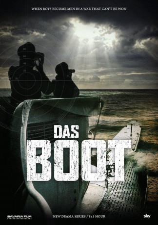

")
 
 IMDB-Wertung: 6.5 / 10
IMDB-Wertung: 6.5 / 10  Metascore:
Metascore: 
Im Herbst 1942 werden die U-Boot-Einsätze im fortgeschrittenen Zweiten Weltkrieg immer grausamer. Im besetzten Frankreich steht nun die Besatzung der U-612 unter dem Kommando des jungen Kapitänleutnants Klaus Hoffmann kurz vor ihrer Jungfernfahrt. Zur selben Zeit formiert sich im Hafen von La Rochelle ein wachsender Widerstand gegen die deutschen Besatzer. Es kommt immer wieder zu Ausschreitungen und Angriffen. Mittendrin im Geschehen ist die Übersetzerin Simone Strasser, deren Bruder Frank zur Crew der U-612 gehört. Während Frank und der Rest seiner Mannschaft bald mit den beengten, bedrohlichen Bedingungen unter Wasser zu kämpfen haben, ist Simone an Land zwischen ihrer Loyalität zu Deutschland, der Résistance und einer verbotenen Liebe hin- und hergerissen. Von Sky produzierte Serien-Fortsetzung von Wolfgang Petersens Kriegsfilm-Klassiker „Das Boot“.
Jahr: 2018
Dauer: 60 Minuten
FSK:
Land: Deutschland Studio: SkyTonspuren:
Untertitel:
Auflösung: 720p (1280x640) Größe: 1198 MB
Regisseur: Andreas Prochaska
Drehbuch: Johannes W. Betz, Stephanie Bogon, Lothar G. Buchheim, Tony Saint, Simon Allen
Soundtrack:
Darsteller:
 Vicky Krieps als Simone Strasser, 8 episodes, 2018
Vicky Krieps als Simone Strasser, 8 episodes, 2018 Tom Wlaschiha als Hagen Forster, 8 episodes, 2018
Tom Wlaschiha als Hagen Forster, 8 episodes, 2018 Thierry Frémont als Duval, 8 episodes, 2018
Thierry Frémont als Duval, 8 episodes, 2018 Pit Bukowski als Pips, 8 episodes, 2018
Pit Bukowski als Pips, 8 episodes, 2018 Lizzy Caplan als Carla Monroe, 8 episodes, 2018
Lizzy Caplan als Carla Monroe, 8 episodes, 2018 Ben Münchow als Lutz, 8 episodes, 2018
Ben Münchow als Lutz, 8 episodes, 2018 Julius Feldmeier als Eugen Strelitz, 8 episodes, 2018
Julius Feldmeier als Eugen Strelitz, 8 episodes, 2018 Rainer Bock als Gluck, 7 episodes, 2018
Rainer Bock als Gluck, 7 episodes, 2018 Franz Dinda als Robert Ehrenberg, 6 episodes, 2018
Franz Dinda als Robert Ehrenberg, 6 episodes, 2018 Robert Stadlober als Hinrich Laudrup, 4 episodes, 2018
Robert Stadlober als Hinrich Laudrup, 4 episodes, 2018 Rafael Gareisen als Max von Haber, 4 episodes, 2018
Rafael Gareisen als Max von Haber, 4 episodes, 2018 Clara Ponsot als Natalie, 4 episodes, 2018
Clara Ponsot als Natalie, 4 episodes, 2018 Vincent Kartheiser als Samuel Greenwood, 4 episodes, 2018
Vincent Kartheiser als Samuel Greenwood, 4 episodes, 2018 Pierre Kiwitt als Bobby Schulz, 2 episodes, 2018
Pierre Kiwitt als Bobby Schulz, 2 episodes, 2018 Jakub Gierszal als Schmidt, 2 episodes, 2018
Jakub Gierszal als Schmidt, 2 episodes, 2018 Kevin McNally als Greenwood Senior, 1 episode, 2018
Kevin McNally als Greenwood Senior, 1 episode, 2018 Roy McCrerey als Captain McAllister, 1 episode, 2018
Roy McCrerey als Captain McAllister, 1 episode, 2018 Niels-Bruno Schmidt als Senior Kriegsmarine Officer, 1 episode, 2018
Niels-Bruno Schmidt als Senior Kriegsmarine Officer, 1 episode, 2018 Jim High als US Sailor 2, 1 episode, 2018
Jim High als US Sailor 2, 1 episode, 2018 James D'Arcy als Jack Sinclair, 1 episode, 2018
James D'Arcy als Jack Sinclair, 1 episode, 2018 Marvin Linke als Peter Kraushaar, 8 episodes, 2018
Marvin Linke als Peter Kraushaar, 8 episodes, 2018Datei: X:\HD-Serien\Boot, Das\Das Boot S01E01 Neue Wege.mkv seit 03.12.2018
Festplatte: HD Serien(A-H)
 Es gibt insgesamt 182 Filme in der Gruppe 'HD-Serien'
Es gibt insgesamt 182 Filme in der Gruppe 'HD-Serien'